<title>La barra lateral de PACE</title>
<meta name="description" content="Cómo se ve hoy la barra lateral en escritorio, qué le sobra y qué le falta, y tres opciones pintadas encima de la app real.">
<link rel="preconnect" href="https://fonts.googleapis.com">
<link rel="preconnect" href="https://fonts.gstatic.com" crossorigin>
<link rel="stylesheet" href="https://fonts.googleapis.com/css2?family=Cormorant+Garamond:ital,wght@0,400;0,500;1,400;1,500&family=Inter+Tight:wght@400;500;600&display=swap">
<style>
/* Una sola columna de lectura, ancha solo donde se comparan fotos. Los colores y
   las letras son los de PACE: el papel crema, la tinta, el oliva del foco y la
   serif itálica de los títulos. */
:root {
  --papel: #F2EDE0;
  --papel-2: #EAE4D4;
  --papel-3: #DFD8C4;
  --tinta: #1F1C17;
  --tinta-2: #4A453C;
  --tinta-3: #7E7766;
  --linea: #C9C0A8;
  --oliva: #3E5A3A;
  --terracota: #A85E43;
  --bronce: #9C6B2E;
  --oliva-suave: rgba(62, 90, 58, 0.10);
  --serif: 'Cormorant Garamond', 'EB Garamond', Georgia, serif;
  --sans: 'Inter Tight', system-ui, -apple-system, 'Segoe UI', sans-serif;
  color-scheme: light;
}
@media (prefers-color-scheme: dark) {
  :root:not([data-theme="light"]) {
    --papel: #1d1a14; --papel-2: #26211a; --papel-3: #2f2920;
    --tinta: #EDE5D3; --tinta-2: #c0b49e; --tinta-3: #B2A995; --linea: #4d4536;
    --oliva: #98B58B; --terracota: #E8A98F; --bronce: #D2A060; --oliva-suave: rgba(122, 154, 109, 0.14);
    color-scheme: dark;
  }
}
:root[data-theme="dark"] {
  --papel: #1d1a14; --papel-2: #26211a; --papel-3: #2f2920;
  --tinta: #EDE5D3; --tinta-2: #c0b49e; --tinta-3: #B2A995; --linea: #4d4536;
  --oliva: #98B58B; --terracota: #E8A98F; --bronce: #D2A060; --oliva-suave: rgba(122, 154, 109, 0.14);
  color-scheme: dark;
}

* { box-sizing: border-box; }
body {
  background: var(--papel); color: var(--tinta);
  font-family: var(--sans); font-size: 16px; line-height: 1.6;
  padding: 0 20px;
}
.hoja { max-width: 1120px; margin: 0 auto; padding-block: 48px 96px; display: flex; flex-direction: column; gap: 64px; }
.texto { max-width: 680px; }
h1, h2, h3 { font-family: var(--serif); font-style: italic; font-weight: 500; line-height: 1.1; margin: 0; text-wrap: balance; }
h1 { font-size: clamp(44px, 7vw, 68px); }
h2 { font-size: clamp(30px, 4.4vw, 40px); }
h3 { font-size: 25px; }
p { margin: 0; }
.rotulo { font-size: 11px; letter-spacing: .14em; text-transform: uppercase; color: var(--tinta-3); font-weight: 500; }
.seccion { display: flex; flex-direction: column; gap: 22px; }
.seccion > header { display: flex; flex-direction: column; gap: 8px; border-top: 1px solid var(--linea); padding-top: 22px; }
.entrada { font-family: var(--serif); font-size: 23px; line-height: 1.4; color: var(--tinta-2); max-width: 640px; }
.nota { font-size: 13.5px; color: var(--tinta-3); }
a { color: var(--oliva); text-underline-offset: 3px; }
code { font-size: .88em; background: var(--papel-2); padding: 1px 5px; border-radius: 4px; }

/* En corto */
.corto { display: grid; grid-template-columns: minmax(0, 1.1fr) minmax(0, 1fr); gap: 28px; background: var(--papel-2);
  border: 1px solid var(--linea); border-radius: 14px; padding: 26px 28px; }
.corto h3 { margin-bottom: 8px; }
.corto ul { margin: 0; padding-left: 18px; display: flex; flex-direction: column; gap: 6px; color: var(--tinta-2); }

/* Controles de las fotos */
.mandos { display: flex; flex-wrap: wrap; gap: 10px 22px; align-items: center; }
.grupo { display: flex; align-items: center; gap: 8px; }
.grupo > span { font-size: 11px; letter-spacing: .12em; text-transform: uppercase; color: var(--tinta-3); }
.pildoras { display: inline-flex; border: 1px solid var(--linea); border-radius: 999px; padding: 3px; gap: 2px; background: var(--papel); }
.pildoras button { font: inherit; font-size: 13px; border: 0; background: none; color: var(--tinta-2); padding: 5px 12px;
  border-radius: 999px; cursor: pointer; }
.pildoras button[aria-pressed="true"] { background: var(--tinta); color: var(--papel); }
.pildoras button:focus-visible, .op-cab button:focus-visible { outline: 2px solid var(--oliva); outline-offset: 2px; }

/* Las cuatro barras, una al lado de otra */
.cuatro { display: grid; grid-template-columns: repeat(4, minmax(0, 1fr)); gap: 18px; align-items: start; }
.barra { display: flex; flex-direction: column; gap: 8px; min-width: 0; }
.barra img { display: block; width: 100%; height: auto; border-radius: 8px; border: 1px solid var(--linea); background: var(--papel-2); }
.barra figcaption { display: flex; justify-content: space-between; align-items: baseline; gap: 8px; }
.barra figcaption b { font-family: var(--serif); font-style: italic; font-weight: 500; font-size: 20px; }
.barra .desc { font-size: 13.5px; line-height: 1.45; color: var(--tinta-2); }
.barra .sello { align-self: flex-start; }
.elegido { margin: 0; padding: 0; list-style: none; display: flex; flex-direction: column; gap: 6px; }
.elegido li { display: grid; grid-template-columns: 16px minmax(0, 1fr); gap: 8px; color: var(--tinta-2); }
.elegido li::before { content: ''; width: 8px; height: 8px; margin-top: 8px; border-radius: 50%; background: var(--oliva); }
.elegido.falta li::before { background: none; border: 1.5px solid var(--bronce); }
.tres { display: grid; grid-template-columns: repeat(3, minmax(0, 1fr)); gap: 22px; align-items: start; max-width: 860px; }
.casos { display: grid; grid-template-columns: repeat(auto-fill, minmax(220px, 1fr)); gap: 16px; }
.caso { margin: 0; display: flex; flex-direction: column; gap: 6px; }
.caso img { display: block; width: 100%; height: auto; border-radius: 8px; border: 1px solid var(--linea); }
.caso figcaption { font-size: 12.5px; color: var(--tinta-3); }
h3.sub { font-size: 24px; margin-top: 10px; }
@media (max-width: 860px) { .tres { grid-template-columns: repeat(2, minmax(0, 1fr)); } }
.tam { font-size: 12px; color: var(--tinta-3); font-variant-numeric: tabular-nums; white-space: nowrap; }
.tam.bien { color: var(--oliva); }

/* Pantalla entera */
.pantalla img { display: block; width: 100%; height: auto; border-radius: 10px; border: 1px solid var(--linea); }

/* Lo que he visto */
.cuatro-listas { display: grid; grid-template-columns: repeat(2, minmax(0, 1fr)); gap: 28px 40px; }
.lista h3 { font-size: 23px; margin-bottom: 10px; display: flex; align-items: baseline; gap: 10px; }
.lista h3 i { width: 9px; height: 9px; border-radius: 50%; display: inline-block; flex: none; transform: translateY(-2px); }
.lista ul { margin: 0; padding: 0; list-style: none; display: flex; flex-direction: column; gap: 12px; }
.lista li { padding-left: 14px; border-left: 1px solid var(--linea); color: var(--tinta-2); font-size: 15px; }
.lista li strong { color: var(--tinta); font-weight: 600; }

/* Opciones */
.opciones { display: grid; grid-template-columns: repeat(3, minmax(0, 1fr)); gap: 22px; }
.op { border: 1px solid var(--linea); border-radius: 14px; padding: 22px 22px 24px; display: flex; flex-direction: column; gap: 12px; background: var(--papel); }
.op.recomendada { border-color: var(--oliva); box-shadow: 0 0 0 1px var(--oliva) inset; }
.op-cab { display: flex; justify-content: space-between; align-items: baseline; gap: 10px; }
.op-letra { font-family: var(--serif); font-size: 40px; line-height: 1; font-style: italic; color: var(--tinta-3); }
.sello { font-size: 10px; letter-spacing: .12em; text-transform: uppercase; color: var(--oliva); border: 1px solid var(--oliva);
  border-radius: 999px; padding: 2px 9px; background: var(--oliva-suave); font-weight: 600; white-space: nowrap; }
.op p { color: var(--tinta-2); font-size: 15px; }
.op dl { margin: 0; display: flex; flex-direction: column; gap: 10px; font-size: 14px; }
.op dt { font-size: 11px; letter-spacing: .12em; text-transform: uppercase; color: var(--tinta-3); }
.op dd { margin: 2px 0 0; color: var(--tinta-2); }

/* Tabla de medidas */
.tabla { overflow-x: auto; border: 1px solid var(--linea); border-radius: 12px; }
table { border-collapse: collapse; width: 100%; font-size: 14px; font-variant-numeric: tabular-nums; min-width: 620px; }
th, td { padding: 10px 14px; text-align: right; border-bottom: 1px solid var(--linea); white-space: nowrap; }
th:first-child, td:first-child { text-align: left; }
thead th { font-size: 11px; letter-spacing: .12em; text-transform: uppercase; color: var(--tinta-3); font-weight: 500; background: var(--papel-2); }
tbody tr:last-child td { border-bottom: 0; }
td.hoy { color: var(--terracota); }
td.ok { color: var(--oliva); }

/* Preguntas */
.preguntas { margin: 0; padding: 0; list-style: none; counter-reset: p; display: flex; flex-direction: column; gap: 18px; max-width: 760px; }
.preguntas li { counter-increment: p; display: grid; grid-template-columns: 44px minmax(0, 1fr); gap: 4px 14px; }
.preguntas li::before { content: counter(p); font-family: var(--serif); font-style: italic; font-size: 34px; line-height: 1; color: var(--oliva); grid-row: span 2; }
.preguntas b { font-weight: 600; }
.preguntas span { color: var(--tinta-2); font-size: 15px; }

@media (max-width: 860px) {
  .corto, .cuatro-listas, .opciones { grid-template-columns: minmax(0, 1fr); }
  .cuatro { grid-template-columns: repeat(2, minmax(0, 1fr)); }
}
@media (max-width: 420px) { body { padding: 0 16px; } .corto { padding: 20px; } }
@media (prefers-reduced-motion: no-preference) { .barra img, .pantalla img { transition: opacity .2s; } }
</style>

<main class="hoja">

  <header class="seccion" style="gap:18px">
    <span class="rotulo">PACE · v0.150.1 · 8 de octubre de 2026 · cuarta vuelta</span>
    <h1>La barra lateral</h1>
    <p class="entrada">Pediste que fuera más útil, más elegante y más bonita. Aquí está cómo se ve hoy en tres pantallas, qué le sobra y qué le falta, y tres maneras de rehacerla, pintadas encima de la app de verdad. Con lo que contestaste después hay una segunda vuelta (el Cuaderno con la siguiente pausa y cuatro semanas), una tercera (Cápsulas sin el hilo de la racha y el agua con tu meta de Ajustes) y una cuarta con lo que faltaba medir: el móvil, el inglés y un día por libre.</p>
  </header>

  <section class="corto" aria-label="En corto">
    <div>
      <h3>Cuarta vuelta: cabe en el móvil, en inglés y por libre</h3>
      <p style="color:var(--tinta-2)">Lo que ya elegiste, medido donde faltaba. En el cajón del móvil cabe entero, cuando la barra de hoy no cabe. En inglés cabe en una línea en todas las pantallas. Un día por libre ya tiene su frase. Para la pausa sigo recomendando que vaya dentro de «Hoy», y para las cápsulas, una versión afinada con el tubo dibujado a trazo fino.</p>
      <p style="margin-top:10px"><a href="#cuarta">Ver la cuarta vuelta</a> · <a href="#tercera">la tercera</a></p>
    </div>
    <div style="display:flex;flex-direction:column;gap:14px">
      <div>
        <span class="rotulo">Ya elegido</span>
        <ul class="elegido" style="margin-top:8px">
          <li>El Cuaderno con la siguiente pausa.</li>
          <li>La semana en Cápsulas, sin el hilo verde de la racha.</li>
          <li>La racha bajo la semana («4 días en ritmo · mejor 9»).</li>
          <li>«Mis rutinas» y «Da de pastar a la vaca», en dos filas de texto.</li>
          <li>La frase del agua sigue tu meta de Ajustes.</li>
        </ul>
      </div>
      <div>
        <span class="rotulo">Falta elegir</span>
        <ul class="elegido falta" style="margin-top:8px">
          <li>La pausa con su rótulo o dentro de «Hoy».</li>
          <li>Si te suenan bien las frases, en castellano y en inglés.</li>
          <li>Si la home también sigue tu meta de vasos.</li>
          <li>Las cápsulas como están o afinadas. <a href="#preguntas">Las preguntas</a></li>
        </ul>
      </div>
    </div>
  </section>

  <!-- 00 · CUARTA VUELTA -->
  <section class="seccion" id="cuarta">
    <header>
      <span class="rotulo">Cuarta vuelta</span>
      <h2>Lo que faltaba medir</h2>
    </header>
    <p class="texto" style="color:var(--tinta-2)">La tercera vuelta solo miraba el escritorio, en castellano y con el día de «A tu ritmo» en marcha. Aquí está el resto, con lo que ya elegiste pintado en la app real: Cápsulas sin el hilo, «Hoy» con palabras, el agua con tu meta, las tres puertas y el pie en texto. Primero, las cápsulas de cerca.</p>

    <h3 class="sub">Las cápsulas, de cerca</h3>
    <div class="texto" style="display:flex;flex-direction:column;gap:12px;color:var(--tinta-2)">
      <p>Pediste unas barras «mucho más elegantes». Frente a las de la primera vuelta lo son: ya no se parten en franjas de color ni salen rayas de cinco minutos. De cerca les veo dos cosas que las abaratan. Los días pasados son un verde transparente que, sobre el beige del tubo, se vuelve gris y parece apagado, y en la paleta oscura más. Y el tubo vacío es una mancha que pesa casi tanto como lo hecho.</p>
      <p>La versión <b>afinada</b> dibuja el tubo con un trazo fino, como las reglas de la barra, lo estrecha de 10 a 7 px y pinta los días pasados en un oliva claro y sólido. Hoy sigue en tinta entera. Mide lo mismo de alto, así que no cambia ninguna medida de la página.</p>
    </div>
    <div class="casos">
      <figure class="caso">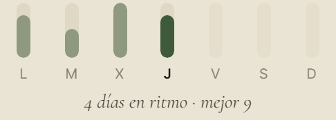<figcaption>Como las elegiste · crema</figcaption></figure>
      <figure class="caso">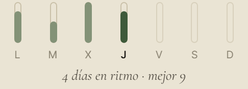<figcaption>Afinadas · crema</figcaption></figure>
      <figure class="caso">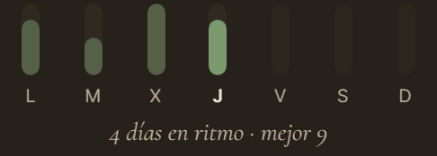<figcaption>Como las elegiste · oscura</figcaption></figure>
      <figure class="caso">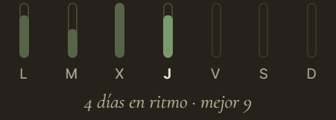<figcaption>Afinadas · oscura</figcaption></figure>
    </div>
    <div class="tres">
      <figure class="barra" style="margin:0"><figcaption><b>Afinadas · crema</b></figcaption>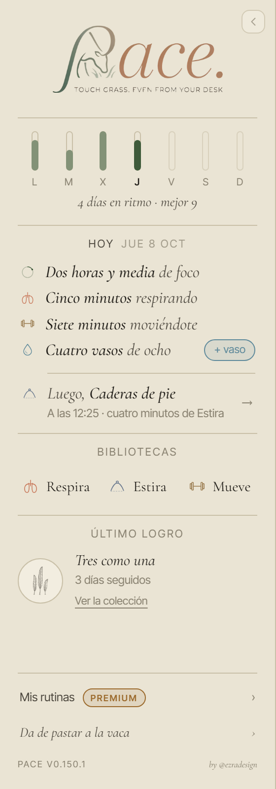<span class="sello">Recomendada</span></figure>
      <figure class="barra" style="margin:0"><figcaption><b>Afinadas · oscura</b></figcaption>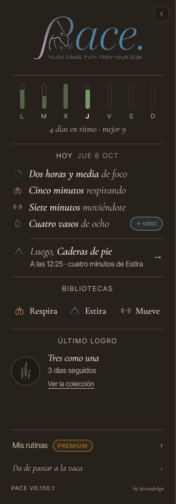</figure>
    </div>

    <h3 class="sub">El cajón del móvil, a 360 × 640</h3>
    <div class="texto" style="display:flex;flex-direction:column;gap:12px;color:var(--tinta-2)">
      <p>En el móvil la barra es un cajón que tapa la pantalla. La de hoy no cabe: con el día lleno se queda en su tamaño mínimo, el 80 %, y aun así 44 px quedan por debajo del borde. El Cuaderno cabe entero, <span data-resumen-cajon></span>. Con el día vacío caben las dos sin encogerse.</p>
      <p>En el móvil la tarjeta de la pausa iba la primera. En el Cuaderno va en su sitio, dentro de «Hoy», a media pantalla, donde el pulgar llega igual. Se pierde la línea «Llevas tres bloques y dos pausas», porque el cuaderno ya dice lo hecho con sus minutos.</p>
    </div>
    <div class="mandos" data-mandos="cajon">
      <div class="grupo"><span>Paleta</span><div class="pildoras" data-k="paleta">
        <button data-v="crema" aria-pressed="true">Crema</button><button data-v="oscuro" aria-pressed="false">Oscura</button></div></div>
      <div class="grupo"><span>Día</span><div class="pildoras" data-k="dia">
        <button data-v="activo" aria-pressed="true">Con actividad</button><button data-v="vacio" aria-pressed="false">Vacío</button></div></div>
    </div>
    <div class="tres">
      <figure class="barra" style="margin:0"><figcaption><b>Hoy</b><span class="tam" data-tam-cajon="hoy"></span></figcaption>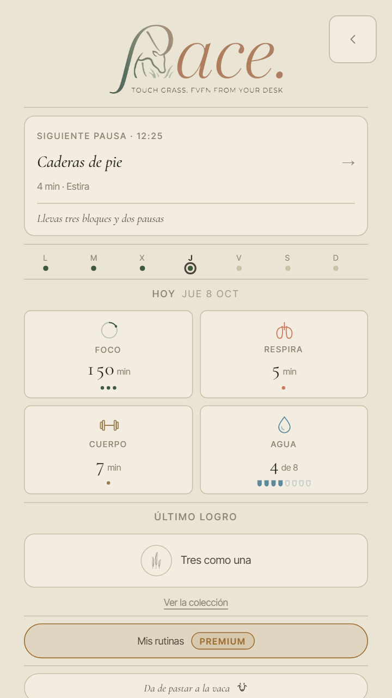</figure>
      <figure class="barra" style="margin:0"><figcaption><b>Dentro de «Hoy»</b><span class="tam" data-tam-cajon="dentro"></span></figcaption>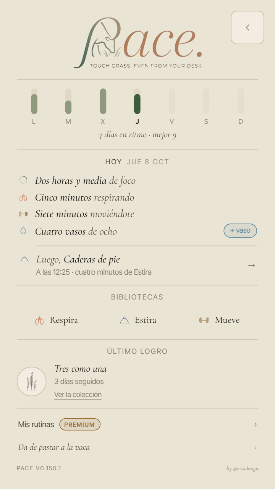<span class="sello">Recomendada</span></figure>
      <figure class="barra" style="margin:0"><figcaption><b>Con su rótulo</b><span class="tam" data-tam-cajon="rotulo"></span></figcaption>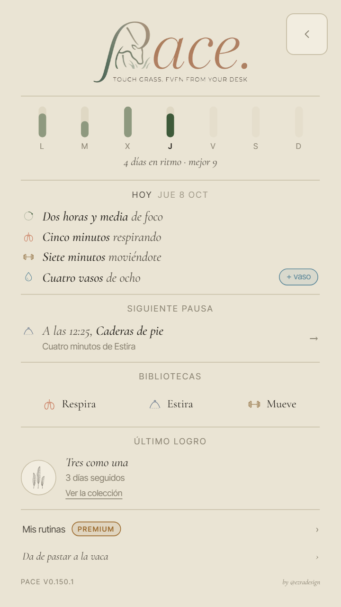</figure>
    </div>

    <h3 class="sub">En inglés</h3>
    <p class="texto" style="color:var(--tinta-2)">Todas las frases caben en una línea, también a 1536 × 704, donde la barra se ve al 94 % como en castellano. Los rótulos, los días y el pie usan los textos en inglés que la app ya tiene.</p>
    <div class="cuatro">
      <figure class="barra" style="margin:0"><figcaption><b>1280 × 800</b></figcaption>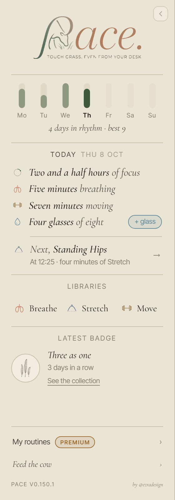</figure>
      <figure class="barra" style="margin:0"><figcaption><b>1536 × 704</b></figcaption>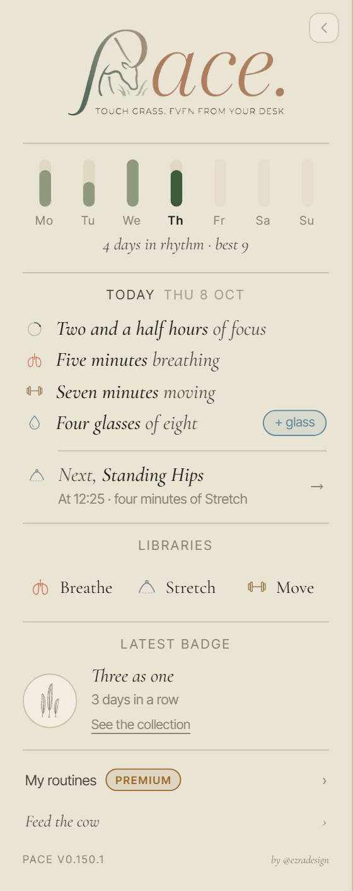</figure>
      <figure class="barra" style="margin:0"><figcaption><b>Día vacío</b></figcaption>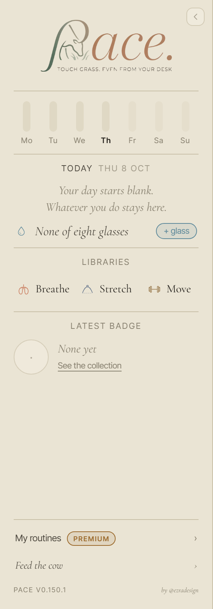</figure>
      <figure class="barra" style="margin:0"><figcaption><b>Cajón</b></figcaption>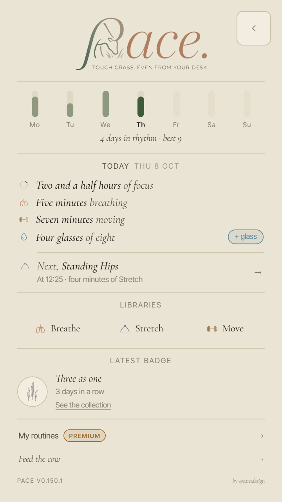</figure>
    </div>
    <div class="tabla" style="max-width:760px">
      <table>
        <thead><tr><th>Castellano</th><th>Inglés</th></tr></thead>
        <tbody>
          <tr><td>Dos horas y media de foco</td><td>Two and a half hours of focus</td></tr>
          <tr><td>Cinco minutos respirando</td><td>Five minutes breathing</td></tr>
          <tr><td>Siete minutos moviéndote</td><td>Seven minutes moving</td></tr>
          <tr><td>Ningún vaso de ocho</td><td>None of eight glasses</td></tr>
          <tr><td>Cuatro vasos de ocho</td><td>Four glasses of eight</td></tr>
          <tr><td>Los ocho vasos del día</td><td>All eight glasses today</td></tr>
          <tr><td>+ vaso</td><td>+ glass</td></tr>
          <tr><td>Luego, Caderas de pie · A las 12:25 · cuatro minutos de Estira</td><td>Next, Standing Hips · At 12:25 · four minutes of Stretch</td></tr>
          <tr><td>Ahora, Caderas de pie</td><td>Now, Standing Hips</td></tr>
          <tr><td>Otra vez, Antídoto silla · Lo último que hiciste</td><td>Again, Chair Antidote · The last thing you did</td></tr>
          <tr><td>Para ahora, Postura reset · Cabe donde estás</td><td>Right now, Posture Reset · Fits where you are</td></tr>
          <tr><td>Continúa, Rondas express · Ronda 2 de 2</td><td>Continue, Express Rounds · Round 2 of 2</td></tr>
          <tr><td>Bibliotecas</td><td>Libraries</td></tr>
        </tbody>
      </table>
    </div>

    <h3 class="sub">Un día por libre</h3>
    <div class="texto" style="display:flex;flex-direction:column;gap:12px;color:var(--tinta-2)">
      <p>Por libre no hay siguiente pausa, y la tarjeta de hoy dice «Repetir», «Para ahora» o «Continúa». Con la pausa dentro, eso pasa a ser la última línea de «Hoy», escrita igual que el resto del cuaderno. Con su rótulo, el rótulo es el de hoy y debajo va la rutina.</p>
      <p>Al medirlo salió un fallo que ya está en la app: por libre, si lo último que hiciste fue un bloque de Foco, la tarjeta desaparece, porque intenta repetir el Foco y el Foco no es una rutina. Al montarlo, «Otra vez» buscará lo último que hiciste de Respira, Mueve o Estira y, si no hay nada, dirá «Para ahora».</p>
    </div>
    <div class="tres">
      <figure class="barra" style="margin:0"><figcaption><b>Repetir</b></figcaption>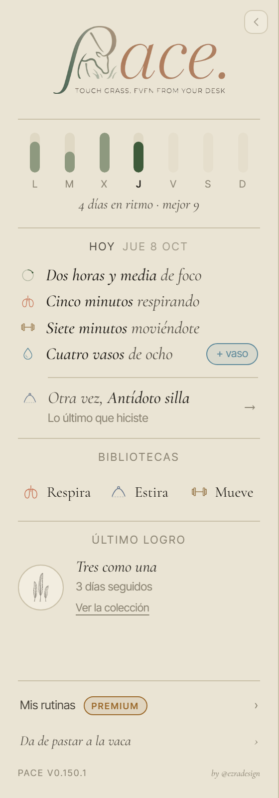<p class="desc">Con algo hecho: «Otra vez, <i>Antídoto silla</i>» · «Lo último que hiciste».</p></figure>
      <figure class="barra" style="margin:0"><figcaption><b>Para ahora</b></figcaption>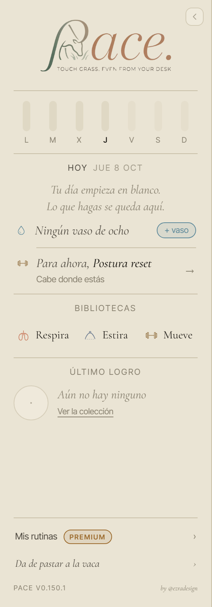<p class="desc">Con el día vacío: «Para ahora, <i>Postura reset</i>» · «Cabe donde estás».</p></figure>
      <figure class="barra" style="margin:0"><figcaption><b>Continúa</b></figcaption>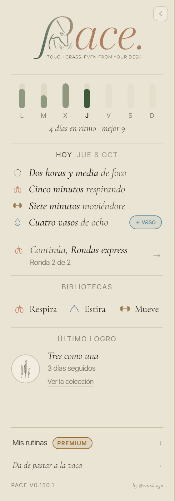<p class="desc">Con Respira a medias: «Continúa, <i>Rondas express</i>» · «Ronda 2 de 2».</p></figure>
    </div>
    <div class="tres">
      <figure class="barra" style="margin:0"><figcaption><b>Con su rótulo · Repetir</b></figcaption>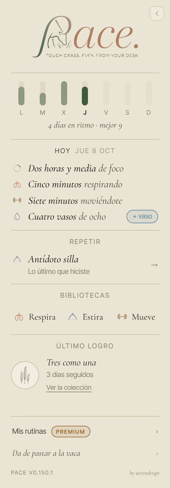</figure>
      <figure class="barra" style="margin:0"><figcaption><b>Con su rótulo · Para ahora</b></figcaption>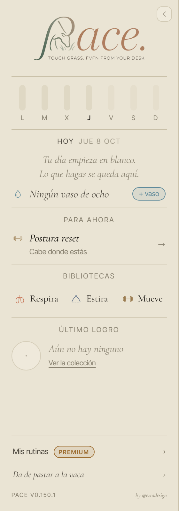</figure>
      <figure class="barra" style="margin:0"><figcaption><b>Con su rótulo · Continúa</b></figcaption>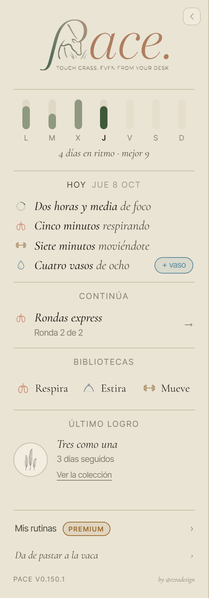</figure>
    </div>

    <h3 class="sub">Las frases más largas</h3>
    <p class="texto" style="color:var(--tinta-2)">Seis horas y 47 minutos de foco, una hora y 43 minutos de cuerpo y once vasos de una meta de doce: caben en una línea en los dos idiomas. Si alguna no cupiera, se parte en dos líneas equilibradas y no se corta.</p>
    <div class="casos" style="grid-template-columns:repeat(auto-fill, minmax(280px, 1fr))">
      <figure class="caso">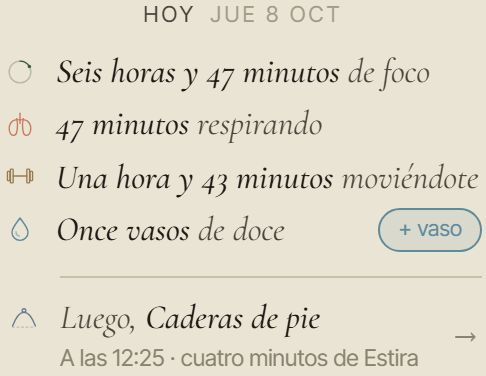<figcaption>Castellano</figcaption></figure>
      <figure class="caso">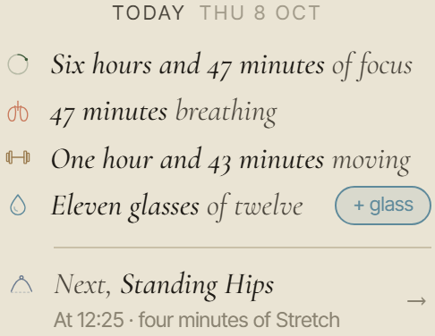<figcaption>Inglés</figcaption></figure>
    </div>
  </section>

  <!-- 0 · TERCERA VUELTA -->
  <section class="seccion" id="tercera">
    <header>
      <span class="rotulo">Tercera vuelta</span>
      <h2>Cápsulas, sin el hilo, y la pausa en dos sitios</h2>
    </header>
    <div class="texto" style="display:flex;flex-direction:column;gap:12px;color:var(--tinta-2)">
      <p>El hilo verde bajo los días se va: tenías razón, repetía lo que ya dicen la frase «4 días en ritmo» y las cápsulas llenas. El botón del agua pasa a «+ vaso» para que la frase quepa siempre en una línea.</p>
      <p>La siguiente pausa, en dos formas. <b>Con su rótulo</b>, como en la segunda vuelta: «Siguiente pausa» y debajo «A las 12:25, <i>Caderas de pie</i>». <b>Dentro de «Hoy»</b>, como la última línea del cuaderno, tras un hilo corto: «Luego, <i>Caderas de pie</i>» y debajo «A las 12:25 · cuatro minutos de Estira».</p>
    </div>
    <div class="mandos" data-mandos="tercera">
      <div class="grupo"><span>Pantalla</span><div class="pildoras" data-k="pantalla">
        <button data-v="1280x800" aria-pressed="true">1280 × 800</button><button data-v="1536x704" aria-pressed="false">1536 × 704</button><button data-v="1920x960" aria-pressed="false">1920 × 960</button></div></div>
      <div class="grupo"><span>Paleta</span><div class="pildoras" data-k="paleta">
        <button data-v="crema" aria-pressed="true">Crema</button><button data-v="oscuro" aria-pressed="false">Oscura</button></div></div>
      <div class="grupo"><span>Día</span><div class="pildoras" data-k="dia">
        <button data-v="activo" aria-pressed="true">Con actividad</button><button data-v="vacio" aria-pressed="false">Vacío</button></div></div>
    </div>
    <div class="tres">
      <figure class="barra" style="margin:0"><figcaption><b>Segunda vuelta</b><span class="tam" data-tam="Cp-capsulas"></span></figcaption>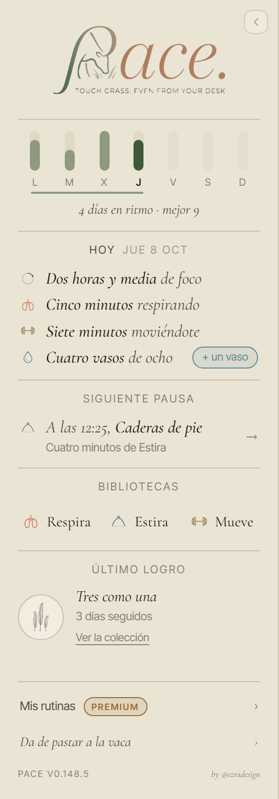<p class="desc">Como la viste: con el hilo verde bajo los días.</p></figure>
      <figure class="barra" style="margin:0"><figcaption><b>Con su rótulo</b><span class="tam" data-tam="Cq-rotulo"></span></figcaption>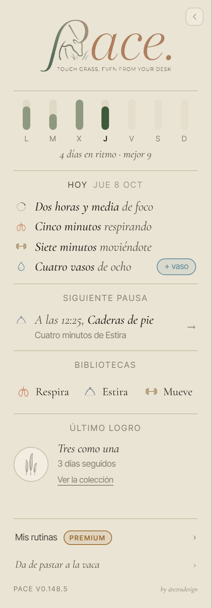<p class="desc">Sin el hilo. La pausa sigue siendo una sección, con «Siguiente pausa» encima.</p></figure>
      <figure class="barra" style="margin:0"><figcaption><b>Dentro de «Hoy»</b><span class="tam" data-tam="Cq-dentro"></span></figcaption><span class="sello">Recomendada</span><p class="desc">Sin el hilo. La pausa es la última línea del cuaderno: primero lo que llevas, luego lo que viene.</p></figure>
    </div>

    <h3 class="sub">La frase del agua sigue tu meta</h3>
    <p class="texto" style="color:var(--tinta-2)">La meta es la que eliges en Ajustes, de 4 a 12 vasos, y siempre se dice con letra. Las fotos son el bloque de «Hoy» con otras metas sembradas como las guardaría Ajustes. He elegido los casos más largos: si caben estos, caben todos.</p>
    <div class="tabla" style="max-width:640px">
      <table>
        <thead><tr><th>Vasos de hoy</th><th>La frase (meta de 8)</th></tr></thead>
        <tbody>
          <tr><td>Ninguno</td><td>Ningún vaso de ocho</td></tr>
          <tr><td>Uno</td><td>Un vaso de ocho</td></tr>
          <tr><td>Menos de la meta</td><td>Cuatro vasos de ocho</td></tr>
          <tr><td>Justo la meta</td><td>Los ocho vasos del día</td></tr>
          <tr><td>Más que la meta</td><td>Nueve vasos de ocho</td></tr>
        </tbody>
      </table>
    </div>
    <div class="casos">
      <figure class="caso">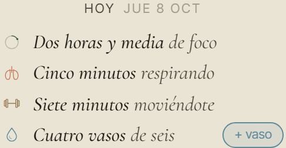<figcaption>Meta 6 · cuatro vasos</figcaption></figure>
      <figure class="caso">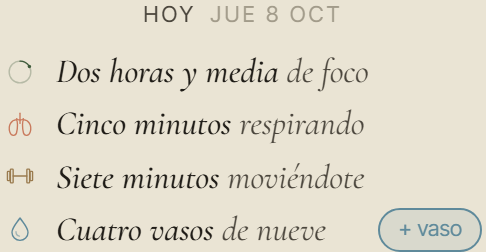<figcaption>Meta 9 · cuatro vasos</figcaption></figure>
      <figure class="caso">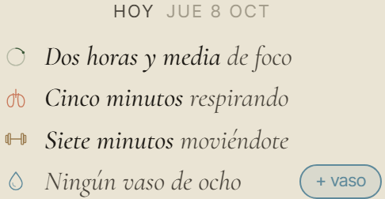<figcaption>Meta 8 · ninguno</figcaption></figure>
      <figure class="caso">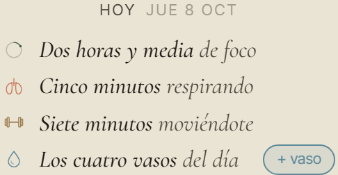<figcaption>Meta 4 · la meta justa</figcaption></figure>
      <figure class="caso">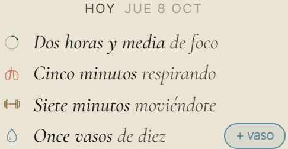<figcaption>Meta 10 · uno más</figcaption></figure>
    </div>
    <p class="nota">Pasarse de la meta usa la misma frase que quedarse corto: «Once vasos de diez» ya dice que te has pasado. Se probó «Once vasos, más de tus diez» y se partía en dos líneas.</p>
  </section>

  <!-- 1 · HOY -->
  <section class="seccion" id="hoy">
    <header>
      <span class="rotulo">Antes</span>
      <h2>Cómo se ve hoy</h2>
    </header>
    <p class="texto">Dos días del jueves 8 de octubre, con la semana tipo de lunes a viernes. El <b>día con actividad</b> son las 12:20, con el día de «A tu ritmo» empezado a las 9:00, tres bloques y dos pausas hechas, cuatro vasos y cuatro días seguidos. El <b>día vacío</b> son las 9:10, con el día ya propuesto y nada hecho todavía.</p>
    <div class="mandos" data-mandos="hoy">
      <div class="grupo"><span>Pantalla</span><div class="pildoras" data-k="pantalla">
        <button data-v="1280x800" aria-pressed="true">1280 × 800</button><button data-v="1536x704" aria-pressed="false">1536 × 704</button><button data-v="1920x960" aria-pressed="false">1920 × 960</button></div></div>
      <div class="grupo"><span>Paleta</span><div class="pildoras" data-k="paleta">
        <button data-v="crema" aria-pressed="true">Crema</button><button data-v="oscuro" aria-pressed="false">Oscura</button></div></div>
      <div class="grupo"><span>Día</span><div class="pildoras" data-k="dia">
        <button data-v="activo" aria-pressed="true">Con actividad</button><button data-v="vacio" aria-pressed="false">Vacío</button></div></div>
    </div>
    <figure class="pantalla" style="margin:0">
      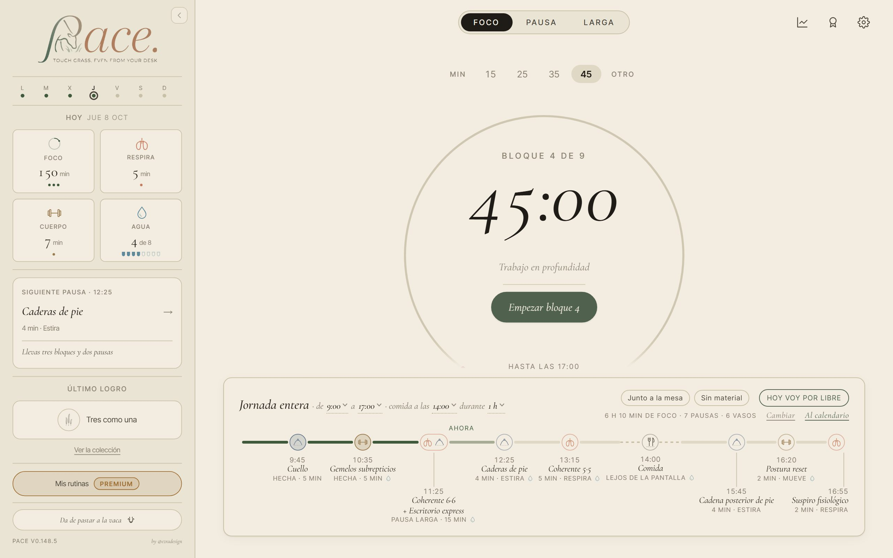
    </figure>
    <p class="nota" data-pie="hoy"></p>
  </section>

  <!-- 2 · LO QUE HE VISTO -->
  <section class="seccion" id="visto">
    <header>
      <span class="rotulo">Auditoría</span>
      <h2>Lo que he visto</h2>
    </header>
    <div class="cuatro-listas">
      <div class="lista">
        <h3><i style="background:var(--oliva)"></i>Se usa y se queda</h3>
        <ul>
          <li><strong>La semana.</strong> Es el único sitio, fuera de Estadísticas, donde se ve la semana, y la abre con un clic.</li>
          <li><strong>Lo hecho hoy.</strong> La home enseña lo que toca y lo planeado («6 h 10 min de foco»); lo que llevas en minutos y vasos solo está aquí.</li>
          <li><strong>Agua suma un vaso.</strong> Es el gesto más repetido del día y se hace sin abrir nada.</li>
          <li><strong>Respira y Cuerpo abren su biblioteca.</strong> Con el día de «A tu ritmo» en pantalla, la home no trae los cuatro botones de actividades, así que estas dos casillas son la única puerta a las bibliotecas.</li>
          <li><strong>«Continúa», «Repetir» y «Para ahora»</strong> en los días por libre: la home no los dice.</li>
          <li><strong>El último logro</strong>, con su rótulo, la vaca del logo y el pie con la versión.</li>
        </ul>
      </div>
      <div class="lista">
        <h3><i style="background:var(--terracota)"></i>Se repite o sobra</h3>
        <ul>
          <li><strong>La tarjeta de la siguiente pausa repite la home palabra por palabra.</strong> «12:25 · Caderas de pie · 4 min · Estira» está también en la línea del día, que en escritorio se ve siempre, también con el Foco en marcha.</li>
          <li><strong>«Llevas tres bloques y dos pausas»</strong> repite el «Bloque 4 de 9» del aro y las «Hecha» de la línea.</li>
          <li><strong>En el día vacío, «Para ahora · Postura reset»</strong> propone otra rutina justo al lado de la pregunta de «A tu ritmo» y su «Comienza». Son dos voces para la misma decisión.</li>
          <li><strong>Cuatro casillas a cero</strong> y «Aún no hay ninguno» ocupan unos 300 px para decir que todavía no hay nada.</li>
        </ul>
      </div>
      <div class="lista">
        <h3><i style="background:var(--bronce)"></i>Falta</h3>
        <ul>
          <li><strong>Una puerta a Estira.</strong> «Cuerpo» abre solo Mueve, y con el día servido la home no tiene botones de actividades: a Estira solo se llega por una parada de la línea o por el menú de la pausa.</li>
          <li><strong>Que se vea que Agua apunta un vaso.</strong> La casilla parece igual que las otras, que abren su módulo, y nada dice que al pulsarla sume.</li>
          <li><strong>La racha.</strong> La barra la sabe («4 días en ritmo, mejor 9») y dejó de enseñarla cuando se quitó el rótulo de la semana.</li>
          <li><strong>Cuánto hiciste cada día.</strong> Los puntos de la semana solo dicen sí o no.</li>
        </ul>
      </div>
      <div class="lista">
        <h3><i style="background:var(--tinta-3)"></i>Se ve pobre</h3>
        <ul>
          <li><strong>La barra está siempre encogida.</strong> No cabe entera, y para no pedir scroll se ve al 90 % a 1280 × 800, al 78 % a 1536 × 704 y al 86 % a 1920 × 960. A 1536 × 704, la letra pequeña de 11 px se ve a 8,6 y las iniciales de los días a 7.</li>
          <li><strong>Ocho cajas con borde</strong> (cuatro casillas, la tarjeta, el logro y dos píldoras) hacen que parezca un panel de control y no papel y tinta.</li>
          <li><strong>Lo que más llama la atención es «Mis rutinas · Premium»</strong>, que lleva a algo que está cerrado, con otra píldora debajo. El pie se lleva 118 px.</li>
          <li><strong>Cada sección se titula a su manera:</strong> la semana sin rótulo, «Hoy» centrado y la tarjeta con su rótulo a la izquierda y por dentro.</li>
          <li><strong>Algunos sellos son un trazo de lápiz muy fino</strong> y a 26 px casi no se ven: «Ciclo completo» es un círculo vacío.</li>
          <li><strong>Dos números para el agua:</strong> la barra dice «4 de 8» (tu meta) y la home «6 vasos» (los que el día reparte en tus horas).</li>
        </ul>
      </div>
    </div>
  </section>

  <!-- 3 · OPCIONES -->
  <section class="seccion" id="opciones">
    <header>
      <span class="rotulo">Después</span>
      <h2>Tres opciones</h2>
    </header>
    <p class="texto">Las tres están pintadas dentro de la app real, sobre el mismo estado que las fotos de antes, con los colores y las letras de PACE. Ningún número es inventado: todo sale de lo que la barra ya sabe. El logo, la vaca, el botón de plegar y el orden general no cambian en ninguna.</p>

    <div class="opciones">
      <article class="op">
        <div class="op-cab"><h3>Afinada</h3><span class="op-letra">A</span></div>
        <p>Las mismas piezas, en el mismo orden y con las mismas funciones. Cambia la forma.</p>
        <dl>
          <div><dt>Qué cambia</dt><dd>Hoy pasa de cuatro cajas a una fila de cuatro columnas. La tarjeta pierde «Llevas…». El logro va sin caja, con su descripción. El pie no se toca.</dd></div>
          <div><dt>Siguiente pausa</dt><dd>En su tarjeta, como hoy.</dd></div>
          <div><dt>Lo que no arregla</dt><dd>Estira sigue sin puerta, el vaso sigue escondido y la tarjeta sigue repitiendo la home.</dd></div>
        </dl>
      </article>
      <article class="op">
        <div class="op-cab"><h3>Puertas</h3><span class="sello">Primera vuelta</span><span class="op-letra">B</span></div>
        <p>La barra hace lo que la home no hace: abrir las bibliotecas y apuntar el agua.</p>
        <dl>
          <div><dt>Qué cambia</dt><dd>Hoy es una lista: cada nombre es una puerta (Respira, Mueve, Estira) y el agua lleva «+ vaso». La semana pinta sus minutos y recupera la racha. El pie pasa a texto.</dd></div>
          <div><dt>Siguiente pausa</dt><dd>En una sola línea, sin caja ni «Llevas…». En el día vacío no se propone nada al lado de «Comienza».</dd></div>
          <div><dt>Lo que cuesta</dt><dd>Una puerta nueva para Estira y dos frases que vuelven («4 días en ritmo · mejor 9»). Las filas miden 38 px de alto.</dd></div>
        </dl>
      </article>
      <article class="op">
        <div class="op-cab"><h3>Cuaderno</h3><span class="op-letra">C</span></div>
        <p>La home dice lo que toca y la barra apunta lo que llevas, con palabras.</p>
        <dl>
          <div><dt>Qué cambia</dt><dd>Hoy se escribe: «Dos horas y media de foco», «Cinco minutos respirando». Debajo, tres puertas grandes. Un día vacío es una frase, no cuatro ceros.</dd></div>
          <div><dt>Siguiente pausa</dt><dd>No sale mientras la home enseña «A tu ritmo». Vuelve para «Continúa», «Repetir» y «Para ahora» en los días por libre.</dd></div>
          <div><dt>Lo que cuesta</dt><dd>Se lee más despacio que una cifra y todas las frases hay que escribirlas también en inglés.</dd></div>
        </dl>
      </article>
    </div>

    <div class="mandos" data-mandos="cuatro">
      <div class="grupo"><span>Pantalla</span><div class="pildoras" data-k="pantalla">
        <button data-v="1280x800" aria-pressed="true">1280 × 800</button><button data-v="1536x704" aria-pressed="false">1536 × 704</button><button data-v="1920x960" aria-pressed="false">1920 × 960</button></div></div>
      <div class="grupo"><span>Paleta</span><div class="pildoras" data-k="paleta">
        <button data-v="crema" aria-pressed="true">Crema</button><button data-v="oscuro" aria-pressed="false">Oscura</button></div></div>
      <div class="grupo"><span>Día</span><div class="pildoras" data-k="dia">
        <button data-v="activo" aria-pressed="true">Con actividad</button><button data-v="vacio" aria-pressed="false">Vacío</button></div></div>
    </div>
    <div class="cuatro">
      <figure class="barra" style="margin:0"><figcaption><b>Hoy</b><span class="tam" data-tam="hoy"></span></figcaption>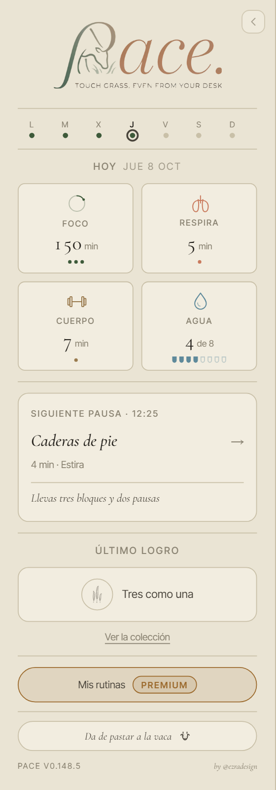</figure>
      <figure class="barra" style="margin:0"><figcaption><b>A · Afinada</b><span class="tam" data-tam="A"></span></figcaption>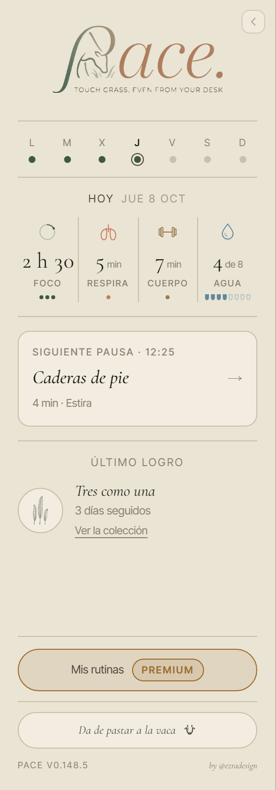</figure>
      <figure class="barra" style="margin:0"><figcaption><b>B · Puertas</b><span class="tam" data-tam="B"></span></figcaption>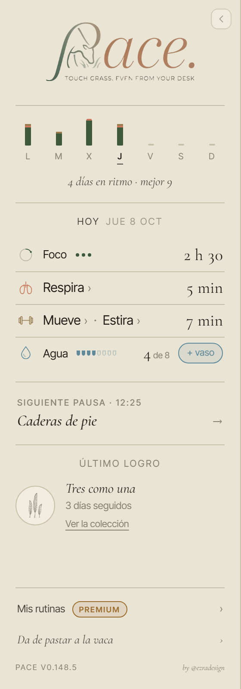</figure>
      <figure class="barra" style="margin:0"><figcaption><b>C · Cuaderno</b><span class="tam" data-tam="C"></span></figcaption>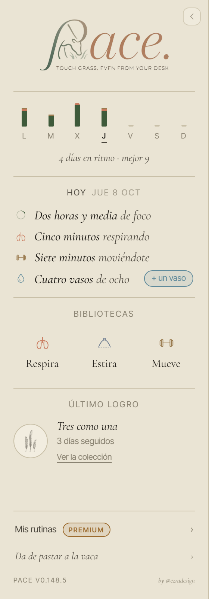</figure>
    </div>
    <p class="nota">El porcentaje es el tamaño al que se ve la barra en esa pantalla: por debajo de 100 % se encoge entera para no pedir scroll.</p>
  </section>

  <!-- 3b · SEGUNDA VUELTA -->
  <section class="seccion" id="cuaderno-pausa">
    <header>
      <span class="rotulo">Segunda vuelta</span>
      <h2>El Cuaderno con la siguiente pausa</h2>
    </header>
    <div class="texto" style="display:flex;flex-direction:column;gap:12px;color:var(--tinta-2)">
      <p>Preguntaste por el Cuaderno con la siguiente pausa y por unas barras más bonitas. Después contestaste que la semana va con barras de minutos, que el pie pasa a texto y que vuelve la racha. Las cuatro barras de abajo llevan ya todo eso, y solo cambia el dibujo de la semana.</p>
      <p>La pausa se dice como el resto del cuaderno: «A las 12:25, <i>Caderas de pie</i>» y, debajo, «Cuatro minutos de Estira». Con la pausa ya abierta diría «Ahora, …». En el día vacío no sale, porque la home está preguntando cómo es tu día y todavía no hay pausa. Bajo los días, un hilo oliva une los que forman la racha.</p>
    </div>
    <div class="mandos" data-mandos="semanas">
      <div class="grupo"><span>Pantalla</span><div class="pildoras" data-k="pantalla">
        <button data-v="1280x800" aria-pressed="true">1280 × 800</button><button data-v="1536x704" aria-pressed="false">1536 × 704</button><button data-v="1920x960" aria-pressed="false">1920 × 960</button></div></div>
      <div class="grupo"><span>Paleta</span><div class="pildoras" data-k="paleta">
        <button data-v="crema" aria-pressed="true">Crema</button><button data-v="oscuro" aria-pressed="false">Oscura</button></div></div>
      <div class="grupo"><span>Día</span><div class="pildoras" data-k="dia">
        <button data-v="activo" aria-pressed="true">Con actividad</button><button data-v="vacio" aria-pressed="false">Vacío</button></div></div>
    </div>
    <div class="cuatro">
      <figure class="barra" style="margin:0"><figcaption><b>Cápsulas</b><span class="tam" data-tam="Cp-capsulas"></span></figcaption><p class="desc">Cada día, una cápsula con su hueco a la vista. El hueco entero es tu mejor día de la semana.</p></figure>
      <figure class="barra" style="margin:0"><figcaption><b>Tinta</b><span class="tam" data-tam="Cp-tinta"></span></figcaption>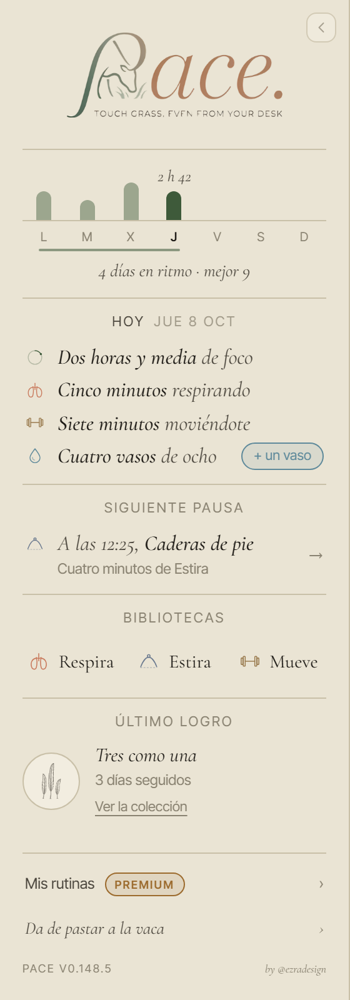<p class="desc">Una barra oliva por día, sobre una línea de suelo. Hoy va en tinta entera y con sus minutos encima.</p></figure>
      <figure class="barra" style="margin:0"><figcaption><b>Brotes</b><span class="tam" data-tam="Cp-brotes"></span></figcaption>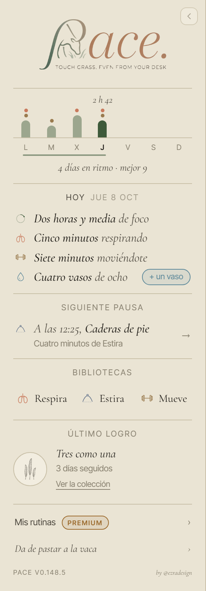<span class="sello">Recomendada</span><p class="desc">La barra de Tinta con un punto encima por cada módulo más: terracota si respiraste y tabaco si te moviste.</p></figure>
      <figure class="barra" style="margin:0"><figcaption><b>Hierba</b><span class="tam" data-tam="Cp-hierba"></span></figcaption>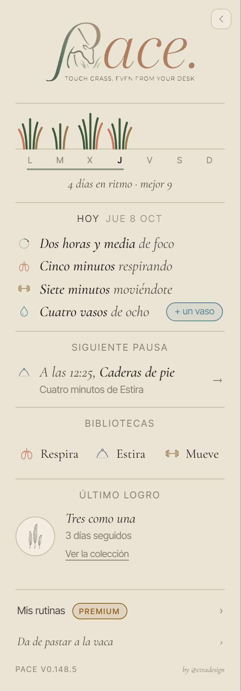<p class="desc">No es una barra: una mata por día, con una brizna por cada bloque de foco y otra por módulo. Es la vaca que pace del logo.</p></figure>
    </div>
    <p class="nota">Las cuatro miden con la misma escala: la barra más alta es el día de la semana con más minutos de foco, respira y cuerpo juntos. El agua no tiene barra, porque tampoco enciende el día.</p>
  </section>

  <!-- 4 · CON LA HOME -->
  <section class="seccion" id="con-la-home">
    <header>
      <span class="rotulo">Junto a la home</span>
      <h2>La pantalla entera</h2>
    </header>
    <p class="texto">Para ver si la barra repite algo de la home, hay que mirarlas juntas. La línea del día ya dice la siguiente pausa, su hora y su módulo; el Cuaderno con pausa la dice en una frase, con la semana «Brotes».</p>
    <div class="mandos" data-mandos="entera">
      <div class="grupo"><span>Barra</span><div class="pildoras" data-k="vista">
        <button data-v="hoy" aria-pressed="false">Hoy</button><button data-v="A" aria-pressed="false">A</button><button data-v="B" aria-pressed="false">B</button><button data-v="C" aria-pressed="false">C</button><button data-v="Cp-brotes" aria-pressed="false">Cuaderno con pausa</button><button data-v="Cq-dentro" aria-pressed="true">Tercera vuelta</button></div></div>
      <div class="grupo"><span>Pantalla</span><div class="pildoras" data-k="pantalla">
        <button data-v="1280x800" aria-pressed="true">1280 × 800</button><button data-v="1536x704" aria-pressed="false">1536 × 704</button></div></div>
      <div class="grupo"><span>Paleta</span><div class="pildoras" data-k="paleta">
        <button data-v="crema" aria-pressed="true">Crema</button><button data-v="oscuro" aria-pressed="false">Oscura</button></div></div>
      <div class="grupo"><span>Día</span><div class="pildoras" data-k="dia">
        <button data-v="activo" aria-pressed="true">Con actividad</button><button data-v="vacio" aria-pressed="false">Vacío</button></div></div>
    </div>
    <figure class="pantalla" style="margin:0">
      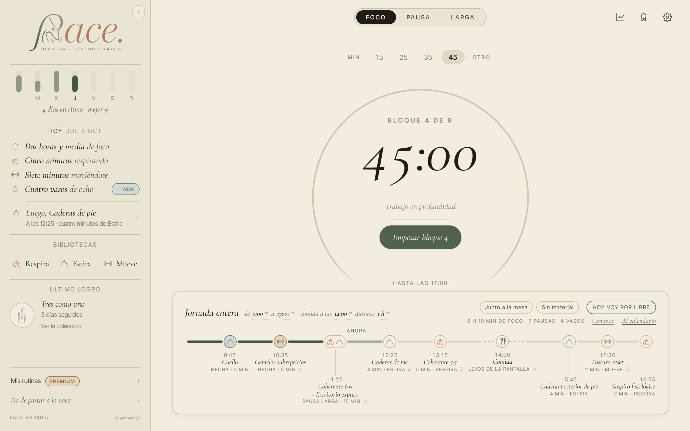
    </figure>
  </section>

  <!-- 5 · MEDIDAS -->
  <section class="seccion" id="medidas">
    <header>
      <span class="rotulo">Medido en la app</span>
      <h2>Todas caben sin pedir scroll</h2>
    </header>
    <p class="texto">Tamaño al que se ve la barra y aire que queda encima del pie, en píxeles. En ninguna combinación, ni hoy ni con las opciones, la página o la barra piden scroll. La paleta oscura mide lo mismo que la crema. <span data-resumen-cp></span></p>
    <div class="tabla">
      <table>
        <thead><tr><th>Pantalla · día</th><th>Hoy</th><th>A</th><th>B</th><th>C</th></tr></thead>
        <tbody data-tabla="A,B,C"></tbody>
      </table>
    </div>
    <div class="tabla">
      <table>
        <thead><tr><th>Cuaderno con pausa</th><th>Hoy</th><th>Cápsulas</th><th>Tinta</th><th>Brotes</th><th>Hierba</th></tr></thead>
        <tbody data-tabla="Cp-capsulas,Cp-tinta,Cp-brotes,Cp-hierba"></tbody>
      </table>
    </div>
    <div class="tabla">
      <table>
        <thead><tr><th>Tercera vuelta</th><th>Hoy</th><th>Con su rótulo</th><th>Dentro de «Hoy»</th></tr></thead>
        <tbody data-tabla="Cq-rotulo,Cq-dentro"></tbody>
      </table>
    </div>
  </section>

  <!-- 6 · RECOMENDACIÓN -->
  <section class="seccion" id="recomendacion">
    <header>
      <span class="rotulo">Recomendación</span>
      <h2>El Cuaderno con Cápsulas y la pausa dentro de «Hoy»</h2>
    </header>
    <div class="texto" style="display:flex;flex-direction:column;gap:14px;color:var(--tinta-2)">
      <p><b>Cuarta vuelta.</b> Con la pausa dentro, el Cuaderno cabe entero en el cajón del móvil y en inglés, y un día por libre se dice con la misma voz («Otra vez», «Para ahora», «Continúa»). Para la semana recomiendo las cápsulas afinadas: lo que elegiste, con el tubo dibujado y sin el verde que se vuelve gris. La home, con sus «6 vasos», la dejaría como está.</p>
      <p><b>Tercera vuelta.</b> Elegiste Cápsulas, y sin el hilo la semana queda más limpia. Para la pausa recomiendo la forma dentro de «Hoy»: el cuaderno se lee de arriba abajo como un día (lo que llevas y, al final, lo que viene), la barra se ahorra una regla y un rótulo, y gana aire, <span data-resumen-cq></span>. Lo que se pierde es el rótulo «Siguiente pausa», que pasa a decirlo la palabra «Luego». Lo de abajo es la recomendación de la segunda vuelta, que se queda como historia.</p>
      <p>En la primera vuelta recomendé la B porque era la única que, a la vez, abría Estira, apuntaba el vaso con un botón visible y dejaba de repetir la home. El Cuaderno con la pausa hace ahora esas tres cosas y añade lo que preguntaste: dice lo que llevas con palabras, y la siguiente pausa en una frase con la hora y la rutina, sin la caja ni los números que ya están en la línea del día. Un día vacío es una frase y no cuatro ceros.</p>
      <p>Para la semana, «Brotes». Las barras de la primera vuelta partían cada barra en franjas de color, y con cinco minutos de Respira la franja era una raya que hacía parecer la barra una pila. Brotes deja la barra entera en oliva, pone hoy en tinta entera con sus minutos y saca el color a un punto por módulo. «Tinta» es la misma sin los puntos, si la quieres más sobria; «Cápsulas» enseña el hueco de cada día; «Hierba» es la más nuestra, pero no es una barra.</p>
      <p>La B sigue valiendo si prefieres leer cifras en filas en vez de frases. El Cuaderno obliga a escribir sus frases también en inglés.</p>
    </div>
  </section>

  <!-- 7 · PREGUNTAS -->
  <section class="seccion" id="preguntas">
    <header>
      <span class="rotulo">Para Ez</span>
      <h2>Lo que tienes que elegir</h2>
    </header>
    <ol class="preguntas">
      <li><b>¿La pausa con su rótulo o dentro de «Hoy»?</b><span>Recomiendo dentro. Las dos están en la tercera vuelta, en las tres pantallas y en las dos paletas, y en la cuarta, en el cajón del móvil y en un día por libre.</span></li>
      <li><b>¿Te suenan bien las frases?</b><span>Del agua: «Ningún vaso de ocho», «Un vaso de ocho», «Cuatro vasos de ocho», «Los ocho vasos del día» y «Nueve vasos de ocho». Del cuaderno: «Dos horas y media de foco», «Cinco minutos respirando», «Siete minutos moviéndote» y «Luego, Caderas de pie». Por libre: «Otra vez», «Para ahora» y «Continúa». Los números van con letra hasta doce, como en «A tu ritmo». En inglés, las de la tabla de la cuarta vuelta.</span></li>
      <li><b>¿La home también sigue tu meta de vasos?</b><span>Recomiendo dejarla como está. La home resume el plan del día: «6 vasos» son las paradas de agua que el día te propone entre tus horas. La barra cuenta lo que llevas frente a tu meta: «Cuatro vasos de ocho». «6 de tus 8 vasos» en la home se leería como que el plan se queda corto.</span></li>
      <li><b>¿Las cápsulas como las elegiste o afinadas?</b><span>Recomiendo las afinadas: el tubo a trazo fino, un poco más estrechas y los días pasados en un oliva sólido que no se vuelve gris. Están de cerca y en la barra entera, en la cuarta vuelta.</span></li>
    </ol>
    <p class="nota">En el móvil la pausa va en el mismo sitio que en el escritorio: así el Cuaderno cabe entero en el cajón a 360 × 640.</p>
  </section>

  <!-- 8 · CÓMO SE HIZO -->
  <section class="seccion" id="como">
    <header>
      <span class="rotulo">Para quien siga</span>
      <h2>Cómo se hizo y qué falta</h2>
    </header>
    <div class="texto" style="display:flex;flex-direction:column;gap:12px;color:var(--tinta-2);font-size:15px">
      <p>Las fotos las hace <code>fotos.js</code>, junto a esta página, sobre el <code>index.html</code> de v0.148.5: <code>node docs/traspaso/archivos/sidebar-8oct/fotos.js</code>. Levanta su propio servidor en el puerto 8781 y se para si ese puerto lo sirve otra carpeta. Siembra el estado como <code>tests/helpers.js</code> (con <code>lastActiveDay</code> y las guardas de migración) y crea las sesiones de hoy con la fábrica de eventos de la app. Las opciones viven en <code>opciones.js</code>: esconden lo que pinta React, conservan el logo y añaden su propio HTML, que lee los mismos selectores que la barra. Las medidas quedan en <code>medidas.json</code>. La segunda vuelta vive en <code>semanas.js</code>: el Cuaderno con la pausa (la frase sale de <code>ritmoSiguiente</code>, como la tarjeta de hoy) y los cuatro dibujos de la semana. <code>OPS=Cp-brotes SOLO=1280x800</code> repite solo esa opción en esa pantalla y conserva las medidas de las demás. La tercera vuelta son <code>Cq-rotulo</code> y <code>Cq-dentro</code> en <code>semanas.js</code>; la frase del agua es <code>fraseAgua</code> en <code>opciones.js</code>, y sus fotos (<code>fotos/agua-*.png</code>) salen con <code>Cq-rotulo</code>.</p>
      <p><b>La cuarta vuelta</b> la hacen <code>cuaderno.js</code> (lo elegido, en castellano y en inglés, con la pausa dentro o con su rótulo y las dos cápsulas) y <code>cuarta.js</code>, que reutiliza el servidor y la siembra de <code>fotos.js</code>: <code>PUERTO=8791 node docs/traspaso/archivos/sidebar-8oct/cuarta.js</code>. Deja <code>fotos/cuarta-*.png</code> y <code>cuarta.json</code>, y pone en esta página las medidas del cajón. Por libre siembra <code>ritmo.libre</code> con la fecha de hoy; «Continúa» siembra <code>pace.breathe.v1</code> con unas rondas a medias. <b>Sigue sin cubrir:</b> el foco del teclado de las filas nuevas, que se prueba al montarlo.</p>
      <p><b>Al implementar:</b> la puerta de Estira necesita un destino nuevo en <code>app/main/main.eventos.jsx</code> (hoy <code>body</code> abre solo Mueve). Las barras de la semana leen <code>weeklyStats</code> con el índice lunes-primero y el mismo criterio de día activo que <code>selectSidebarWeek</code>; el agua no tiene barra. Hay que conservar los ganchos que usan las pruebas (<code>data-pace-hoy-celda</code>, <code>data-pace-semana</code>, <code>data-pace-sidebar-ultimo-titulo</code>, <code>data-pace-sidebar-accion</code>) y revisar <code>tests/sidebar-redesign.spec.js</code> y <code>tests/sidebar-altura.spec.js</code>. El motor de la escala se queda como red para pantallas más bajas.</p>
    </div>
  </section>

</main>

<script>
/* Lo medido en la app (medidas.json): tamaño al que se ve la barra y aire sobre el pie. */
const MEDIDAS = /*MEDIDAS*/{"antes":{"1280x800-crema-vacio":{"escala":0.926,"huecoAlPie":0},"1280x800-crema-activo":{"escala":0.896,"huecoAlPie":0},"1280x800-oscuro-vacio":{"escala":0.926,"huecoAlPie":0},"1280x800-oscuro-activo":{"escala":0.896,"huecoAlPie":0},"1536x704-crema-vacio":{"escala":0.81,"huecoAlPie":0},"1536x704-crema-activo":{"escala":0.783,"huecoAlPie":0},"1536x704-oscuro-vacio":{"escala":0.81,"huecoAlPie":0},"1536x704-oscuro-activo":{"escala":0.783,"huecoAlPie":0},"1920x960-crema-vacio":{"escala":0.892,"huecoAlPie":0},"1920x960-crema-activo":{"escala":0.861,"huecoAlPie":1},"1920x960-oscuro-vacio":{"escala":0.892,"huecoAlPie":0},"1920x960-oscuro-activo":{"escala":0.861,"huecoAlPie":1}},"despues":{"A-1280x800-crema-vacio":{"escala":1,"huecoAlPie":97},"B-1280x800-crema-vacio":{"escala":1,"huecoAlPie":120},"C-1280x800-crema-vacio":{"escala":1,"huecoAlPie":123},"Cp-capsulas-1280x800-crema-vacio":{"escala":1,"huecoAlPie":182},"Cp-tinta-1280x800-crema-vacio":{"escala":1,"huecoAlPie":175},"Cp-brotes-1280x800-crema-vacio":{"escala":1,"huecoAlPie":165},"Cp-hierba-1280x800-crema-vacio":{"escala":1,"huecoAlPie":179},"A-1280x800-crema-activo":{"escala":1,"huecoAlPie":84},"B-1280x800-crema-activo":{"escala":1,"huecoAlPie":53},"C-1280x800-crema-activo":{"escala":1,"huecoAlPie":51},"Cp-capsulas-1280x800-crema-activo":{"escala":1,"huecoAlPie":23},"Cp-tinta-1280x800-crema-activo":{"escala":1,"huecoAlPie":16},"Cp-brotes-1280x800-crema-activo":{"escala":1,"huecoAlPie":6},"Cp-hierba-1280x800-crema-activo":{"escala":1,"huecoAlPie":20},"A-1280x800-oscuro-vacio":{"escala":1,"huecoAlPie":97},"B-1280x800-oscuro-vacio":{"escala":1,"huecoAlPie":120},"C-1280x800-oscuro-vacio":{"escala":1,"huecoAlPie":123},"Cp-capsulas-1280x800-oscuro-vacio":{"escala":1,"huecoAlPie":182},"Cp-tinta-1280x800-oscuro-vacio":{"escala":1,"huecoAlPie":175},"Cp-brotes-1280x800-oscuro-vacio":{"escala":1,"huecoAlPie":165},"Cp-hierba-1280x800-oscuro-vacio":{"escala":1,"huecoAlPie":179},"A-1280x800-oscuro-activo":{"escala":1,"huecoAlPie":84},"B-1280x800-oscuro-activo":{"escala":1,"huecoAlPie":53},"C-1280x800-oscuro-activo":{"escala":1,"huecoAlPie":51},"Cp-capsulas-1280x800-oscuro-activo":{"escala":1,"huecoAlPie":23},"Cp-tinta-1280x800-oscuro-activo":{"escala":1,"huecoAlPie":16},"Cp-brotes-1280x800-oscuro-activo":{"escala":1,"huecoAlPie":6},"Cp-hierba-1280x800-oscuro-activo":{"escala":1,"huecoAlPie":20},"A-1536x704-crema-vacio":{"escala":1,"huecoAlPie":1},"B-1536x704-crema-vacio":{"escala":1,"huecoAlPie":24},"C-1536x704-crema-vacio":{"escala":1,"huecoAlPie":27},"Cp-capsulas-1536x704-crema-vacio":{"escala":1,"huecoAlPie":86},"Cp-tinta-1536x704-crema-vacio":{"escala":1,"huecoAlPie":79},"Cp-brotes-1536x704-crema-vacio":{"escala":1,"huecoAlPie":69},"Cp-hierba-1536x704-crema-vacio":{"escala":1,"huecoAlPie":83},"A-1536x704-crema-activo":{"escala":0.981,"huecoAlPie":1},"B-1536x704-crema-activo":{"escala":0.94,"huecoAlPie":0},"C-1536x704-crema-activo":{"escala":0.937,"huecoAlPie":0},"Cp-capsulas-1536x704-crema-activo":{"escala":0.902,"huecoAlPie":0},"Cp-tinta-1536x704-crema-activo":{"escala":0.893,"huecoAlPie":0},"Cp-brotes-1536x704-crema-activo":{"escala":0.881,"huecoAlPie":0},"Cp-hierba-1536x704-crema-activo":{"escala":0.898,"huecoAlPie":0},"A-1536x704-oscuro-vacio":{"escala":1,"huecoAlPie":1},"B-1536x704-oscuro-vacio":{"escala":1,"huecoAlPie":24},"C-1536x704-oscuro-vacio":{"escala":1,"huecoAlPie":27},"Cp-capsulas-1536x704-oscuro-vacio":{"escala":1,"huecoAlPie":86},"Cp-tinta-1536x704-oscuro-vacio":{"escala":1,"huecoAlPie":79},"Cp-brotes-1536x704-oscuro-vacio":{"escala":1,"huecoAlPie":69},"Cp-hierba-1536x704-oscuro-vacio":{"escala":1,"huecoAlPie":83},"A-1536x704-oscuro-activo":{"escala":0.981,"huecoAlPie":1},"B-1536x704-oscuro-activo":{"escala":0.94,"huecoAlPie":0},"C-1536x704-oscuro-activo":{"escala":0.937,"huecoAlPie":0},"Cp-capsulas-1536x704-oscuro-activo":{"escala":0.902,"huecoAlPie":0},"Cp-tinta-1536x704-oscuro-activo":{"escala":0.893,"huecoAlPie":0},"Cp-brotes-1536x704-oscuro-activo":{"escala":0.881,"huecoAlPie":0},"Cp-hierba-1536x704-oscuro-activo":{"escala":0.898,"huecoAlPie":0},"A-1920x960-crema-vacio":{"escala":1,"huecoAlPie":83},"B-1920x960-crema-vacio":{"escala":1,"huecoAlPie":111},"C-1920x960-crema-vacio":{"escala":1,"huecoAlPie":115},"Cp-capsulas-1920x960-crema-vacio":{"escala":1,"huecoAlPie":188},"Cp-tinta-1920x960-crema-vacio":{"escala":1,"huecoAlPie":180},"Cp-brotes-1920x960-crema-vacio":{"escala":1,"huecoAlPie":167},"Cp-hierba-1920x960-crema-vacio":{"escala":1,"huecoAlPie":185},"A-1920x960-crema-activo":{"escala":1,"huecoAlPie":67},"B-1920x960-crema-activo":{"escala":1,"huecoAlPie":28},"C-1920x960-crema-activo":{"escala":1,"huecoAlPie":26},"Cp-capsulas-1920x960-crema-activo":{"escala":0.988,"huecoAlPie":1},"Cp-tinta-1920x960-crema-activo":{"escala":0.979,"huecoAlPie":1},"Cp-brotes-1920x960-crema-activo":{"escala":0.966,"huecoAlPie":1},"Cp-hierba-1920x960-crema-activo":{"escala":0.984,"huecoAlPie":1},"A-1920x960-oscuro-vacio":{"escala":1,"huecoAlPie":83},"B-1920x960-oscuro-vacio":{"escala":1,"huecoAlPie":111},"C-1920x960-oscuro-vacio":{"escala":1,"huecoAlPie":115},"Cp-capsulas-1920x960-oscuro-vacio":{"escala":1,"huecoAlPie":188},"Cp-tinta-1920x960-oscuro-vacio":{"escala":1,"huecoAlPie":180},"Cp-brotes-1920x960-oscuro-vacio":{"escala":1,"huecoAlPie":167},"Cp-hierba-1920x960-oscuro-vacio":{"escala":1,"huecoAlPie":185},"A-1920x960-oscuro-activo":{"escala":1,"huecoAlPie":67},"B-1920x960-oscuro-activo":{"escala":1,"huecoAlPie":28},"C-1920x960-oscuro-activo":{"escala":1,"huecoAlPie":26},"Cp-capsulas-1920x960-oscuro-activo":{"escala":0.988,"huecoAlPie":1},"Cp-tinta-1920x960-oscuro-activo":{"escala":0.979,"huecoAlPie":1},"Cp-brotes-1920x960-oscuro-activo":{"escala":0.966,"huecoAlPie":1},"Cp-hierba-1920x960-oscuro-activo":{"escala":0.984,"huecoAlPie":1},"Cq-rotulo-1280x800-crema-vacio":{"escala":1,"huecoAlPie":182},"Cq-dentro-1280x800-crema-vacio":{"escala":1,"huecoAlPie":182},"Cq-rotulo-1280x800-crema-activo":{"escala":1,"huecoAlPie":30},"Cq-dentro-1280x800-crema-activo":{"escala":1,"huecoAlPie":56},"Cq-rotulo-1280x800-oscuro-vacio":{"escala":1,"huecoAlPie":182},"Cq-dentro-1280x800-oscuro-vacio":{"escala":1,"huecoAlPie":182},"Cq-rotulo-1280x800-oscuro-activo":{"escala":1,"huecoAlPie":30},"Cq-dentro-1280x800-oscuro-activo":{"escala":1,"huecoAlPie":56},"Cq-rotulo-1536x704-crema-vacio":{"escala":1,"huecoAlPie":86},"Cq-dentro-1536x704-crema-vacio":{"escala":1,"huecoAlPie":86},"Cq-rotulo-1536x704-crema-activo":{"escala":0.91,"huecoAlPie":0},"Cq-dentro-1536x704-crema-activo":{"escala":0.944,"huecoAlPie":0},"Cq-rotulo-1536x704-oscuro-vacio":{"escala":1,"huecoAlPie":86},"Cq-dentro-1536x704-oscuro-vacio":{"escala":1,"huecoAlPie":86},"Cq-rotulo-1536x704-oscuro-activo":{"escala":0.91,"huecoAlPie":0},"Cq-dentro-1536x704-oscuro-activo":{"escala":0.944,"huecoAlPie":0},"Cq-rotulo-1920x960-crema-vacio":{"escala":1,"huecoAlPie":188},"Cq-dentro-1920x960-crema-vacio":{"escala":1,"huecoAlPie":188},"Cq-rotulo-1920x960-crema-activo":{"escala":0.997,"huecoAlPie":1},"Cq-dentro-1920x960-crema-activo":{"escala":1,"huecoAlPie":31},"Cq-rotulo-1920x960-oscuro-vacio":{"escala":1,"huecoAlPie":188},"Cq-dentro-1920x960-oscuro-vacio":{"escala":1,"huecoAlPie":188},"Cq-rotulo-1920x960-oscuro-activo":{"escala":0.997,"huecoAlPie":1},"Cq-dentro-1920x960-oscuro-activo":{"escala":1,"huecoAlPie":31}}};

/* Lo medido del cajón del móvil en la cuarta vuelta (cuarta.json): escala y px bajo el borde. */
const CUARTA = /*CUARTA*/{"cajon-hoy-crema-activo":{"escala":0.8,"fuera":44},"cajon-dentro-crema-activo":{"escala":0.843,"fuera":1},"cajon-rotulo-crema-activo":{"escala":0.813,"fuera":1},"cajon-hoy-crema-vacio":{"escala":0.8,"fuera":21},"cajon-dentro-crema-vacio":{"escala":1,"fuera":0},"cajon-rotulo-crema-vacio":{"escala":1,"fuera":0},"cajon-hoy-oscuro-activo":{"escala":0.8,"fuera":44},"cajon-dentro-oscuro-activo":{"escala":0.843,"fuera":1},"cajon-rotulo-oscuro-activo":{"escala":0.813,"fuera":1},"cajon-hoy-oscuro-vacio":{"escala":0.8,"fuera":21},"cajon-dentro-oscuro-vacio":{"escala":1,"fuera":0},"cajon-rotulo-oscuro-vacio":{"escala":1,"fuera":0}};

const estado = {
  cajon: { paleta: 'crema', dia: 'activo' },
  hoy: { pantalla: '1280x800', paleta: 'crema', dia: 'activo' },
  cuatro: { pantalla: '1280x800', paleta: 'crema', dia: 'activo' },
  semanas: { pantalla: '1280x800', paleta: 'crema', dia: 'activo' },
  tercera: { pantalla: '1280x800', paleta: 'crema', dia: 'activo' },
  entera: { vista: 'Cq-dentro', pantalla: '1280x800', paleta: 'crema', dia: 'activo' },
};
const GRUPOS = { cuatro: ['hoy', 'A', 'B', 'C'], semanas: ['Cp-capsulas', 'Cp-tinta', 'Cp-brotes', 'Cp-hierba'],
  tercera: ['Cp-capsulas', 'Cq-rotulo', 'Cq-dentro'] };
const NOMBRE = { '1280x800': '1280 × 800', '1536x704': '1536 × 704', '1920x960': '1920 × 960' };
const pct = (x) => Math.round(x * 100) + ' %';

function clave(e) { return e.pantalla + '-' + e.paleta + '-' + e.dia; }

function pintar() {
  const h = estado.hoy, k = clave(h);
  document.querySelector('[data-foto="hoy"]').src = 'fotos/antes-' + k + '.jpg';
  const m = MEDIDAS.antes && MEDIDAS.antes[k];
  document.querySelector('[data-pie="hoy"]').textContent = m
    ? 'A ' + NOMBRE[h.pantalla] + ' la barra se ve al ' + pct(m.escala) + ' de su tamaño para caber sin scroll.' : '';

  const tam = (el, x) => { el.textContent = x == null ? '' : 'se ve al ' + pct(x); el.classList.toggle('bien', x >= 0.93); };
  Object.keys(GRUPOS).forEach((g) => {
    const kc = clave(estado[g]);
    GRUPOS[g].forEach((o) => {
      const hoy = o === 'hoy';
      const zona = document.querySelector('[data-mandos="' + g + '"]').parentElement;
      zona.querySelector('[data-barra="' + o + '"]').src = hoy ? 'fotos/antes-barra-' + kc + '.png' : 'fotos/despues-barra-' + o + '-' + kc + '.png';
      const v = hoy ? (MEDIDAS.antes && MEDIDAS.antes[kc]) : (MEDIDAS.despues && MEDIDAS.despues[o + '-' + kc]);
      tam(zona.querySelector('[data-tam="' + o + '"]'), v && v.escala);
    });
  });

  const cj = estado.cajon, kcaj = cj.paleta + '-' + cj.dia;
  document.querySelectorAll('[data-cajon]').forEach((img) => {
    const f = img.getAttribute('data-cajon');
    img.src = 'fotos/cuarta-cajon-' + f + '-' + kcaj + '.png';
    const v = CUARTA['cajon-' + f + '-' + kcaj];
    const el = document.querySelector('[data-tam-cajon="' + f + '"]');
    if (el) {
      el.textContent = v ? 'se ve al ' + pct(v.escala) + (v.fuera > 1 ? ' · ' + v.fuera + ' px fuera' : ' · cabe') : '';
      el.classList.toggle('bien', !!v && v.fuera <= 1);
    }
  });

  const e = estado.entera, ke = clave(e);
  document.querySelector('[data-foto="entera"]').src = e.vista === 'hoy' ? 'fotos/antes-' + ke + '.jpg' : 'fotos/despues-' + e.vista + '-' + ke + '.jpg';
}

document.querySelectorAll('[data-mandos]').forEach((mandos) => {
  const e = estado[mandos.getAttribute('data-mandos')];
  mandos.querySelectorAll('.pildoras').forEach((grupo) => {
    const k = grupo.getAttribute('data-k');
    grupo.querySelectorAll('button').forEach((b) => {
      b.addEventListener('click', () => {
        e[k] = b.getAttribute('data-v');
        grupo.querySelectorAll('button').forEach((x) => x.setAttribute('aria-pressed', String(x === b)));
        pintar();
      });
    });
  });
});

document.querySelectorAll('[data-tabla]').forEach(function tabla(cuerpo) {
  if (!MEDIDAS.antes) return;
  const ops = cuerpo.getAttribute('data-tabla').split(',');
  const filas = [];
  ['1280x800', '1536x704', '1920x960'].forEach((p) => {
    ['activo', 'vacio'].forEach((d) => {
      const k = p + '-crema-' + d;
      const celda = (v, hoy) => v ? '<td class="' + (hoy ? 'hoy' : (v.escala >= 0.93 ? 'ok' : '')) + '">' + pct(v.escala) +
        (hoy ? '' : ' · ' + Math.max(0, v.huecoAlPie || 0) + ' px') + '</td>' : '<td>—</td>';
      filas.push('<tr><td>' + NOMBRE[p] + ' · ' + (d === 'activo' ? 'con actividad' : 'vacío') + '</td>' + celda(MEDIDAS.antes[k], true) +
        ops.map((o) => celda(MEDIDAS.despues[o + '-' + k], false)).join('') + '</tr>');
    });
  });
  cuerpo.innerHTML = filas.join('');
});

/* Lo que se dice de la segunda vuelta sale de las medidas, no se escribe a mano. */
(function resumenCq() {
  const el = document.querySelector('[data-resumen-cq]');
  if (!el || !MEDIDAS.despues) return;
  const a = MEDIDAS.despues['Cq-dentro-1280x800-crema-activo'], b = MEDIDAS.despues['Cq-rotulo-1280x800-crema-activo'];
  const c = MEDIDAS.despues['Cq-dentro-1536x704-crema-activo'], e = MEDIDAS.despues['Cq-rotulo-1536x704-crema-activo'];
  if (a && b && c && e) el.textContent = 'medido con el día lleno: a 1280 × 800 quedan ' + a.huecoAlPie + ' px de aire sobre el pie en vez de ' + b.huecoAlPie +
    ', y a 1536 × 704 se ve al ' + pct(c.escala) + ' en vez de al ' + pct(e.escala);
})();

(function resumenCajon() {
  const el = document.querySelector('[data-resumen-cajon]');
  const a = CUARTA['cajon-dentro-crema-activo'], b = CUARTA['cajon-rotulo-crema-activo'];
  if (el && a && b) el.textContent = 'con la pausa dentro al ' + pct(a.escala) + ' y con su rótulo al ' + pct(b.escala);
})();

(function resumen() {
  const el = document.querySelector('[data-resumen-cp]');
  if (!el || !MEDIDAS.despues) return;
  const v = MEDIDAS.despues['Cp-brotes-1280x800-crema-activo'];
  const w = MEDIDAS.despues['Cp-brotes-1536x704-crema-activo'];
  if (v && w) el.textContent = 'El Cuaderno con la pausa y la semana Brotes se ve al ' + pct(v.escala) + ' a 1280 × 800 y al ' + pct(w.escala) + ' a 1536 × 704, con el día lleno.';
})();

pintar();
</script>
